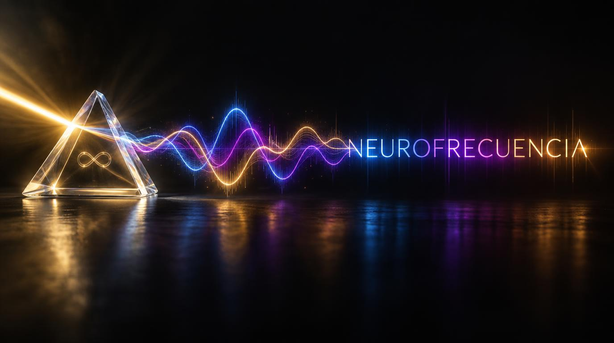

Entendiendo el sobreestímulo sensorial
Claves prácticas para identificar cuando tu sistema nervioso necesita una pausa profunda.

"Te ayudo a entender que quizá no eras difícil, solo estabas intentando encajar en una frecuencia que no era la tuya."

Trayectoria profesional combinada con el enfoque de unmasking (desenmascaramiento), ofreciendo un espacio clínico cálido, humano y libre de etiquetas rígidas.
“Mi objetivo no es corregir tu forma de pensar, sino darte las herramientas para comprender tu propio mapa neurológico.”
Acompañamiento personalizado online o presencial enfocado en tus necesidades específicas.
Espacios de psicoeducación, comunidad y validación compartida entre iguales.
Diagnóstico comprensivo y mapas de procesamiento cognitivo adaptados a ti.
Uso de cámara opcional si experimentas fatiga sensorial.
Espacio libre para hacer pausas, moverte o autorregularte.
Cero necesidad de enmascarar ni aparentar normalidad.
Ebook Neurofrecuencia
Un recurso diseñado para acompañar tu proceso de autoconocimiento neurodivergente desde la amabilidad, la empatía y respetando plenamente tus tiempos.
Obtener el EbookClaves prácticas para identificar cuando tu sistema nervioso necesita una pausa profunda.
Cómo transformar las etiquetas limitantes en comprensión de tu verdadera naturaleza.
Pequeños anclajes cotidianos que devuelven la calma a tu mente y cuerpo.
Selecciona el horario que mejor se adapte a tu energía actual mediante nuestro sistema directo.
Aquí se integrará el calendario de Acuity Scheduling para agendar citas sin fricción.
Abrir Calendario de Citas